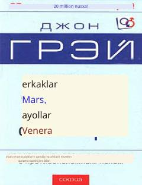

EMErkaklar va ayollarning o'zaro munosabatlarini yaxshilash va bir-birini tushunish sirlari.
Ushbu kitob erkak va ayol o'rtasidagi psixologik farqlarni tushuntirib, o'zaro munosabatlarni yaxshilash va tushunmovchiliklarni bartaraf etish yo'llarini o'rgatadi. Muallif qarama-qarshi jins vakillari turli sayyoralardan kelgandek farq qilishini ko'rsatib beradi va ularning hissiy ehtiyojlarini qondirish sirlarini ochadi. Asar oilaviy va shaxsiy munosabatlarda baxtga erishishni istagan barcha kitobxonlar uchun mo'ljallangan.